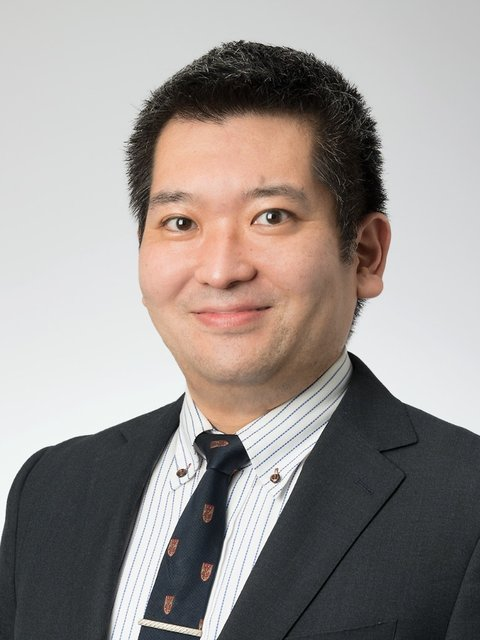

Services / 03
不正調査・不正対応
Fraud Investigation
事実関係の調査と、過年度の自主点検の進め方を設計し、実施を支援します。原因を分析し、再発防止策と内部統制の見直しまで一緒に進めます。
考え方Approach
会計上の疑義が生じたとき、まず必要なのは、事実関係を一つずつ確かめることです。その結果に応じて、必要な是正と再発防止につなげます。
こんなときにWhen to Consult
- 不正が
見つかり、 ほかに 同じ 問題がないかの 点検を 求められている - 再発防止策と
内部管理体制の 立て直しを、 外部の 目を 入れて 進めたい
事実の確認が必要になることがある事象の例
次のような事象は、それだけで不正があることを意味しません。いくつかが重なって見られるときは、証拠に基づいて事実を確かめることをおすすめします。
- 合理性を
欠く 説明や、 監査人への 過度な 要求 - 資料や
根拠が、 すぐに 出てこない - 監査人の
指摘を、 検討せずに 否定する - 成果を
急ぐあまり、 現場の 声が 届かなくなっている
支援の内容Scope
- 対象
- 上場企業、上場準備企業。不正や会計上の疑義が見つかった会社。
- 支援内容
- 事実関係の調査の計画と実施の支援、過年度の自主点検の設計と進行、原因の分析、再発防止策と内部統制の見直し、監査法人への説明の準備。取引所に提出する内部管理体制確認書の作成も支援します。
- 成果物
- 調査・点検の計画、事実関係と原因をまとめた報告資料、再発防止策と内部統制の改善計画。
- 目指す状態
- 原因をふさぎ、外部に説明できる状態。
- 対象外
- 法的な判断や交渉（弁護士の業務。法的な判断が必要な場合は、弁護士へのご相談をおすすめします）。監査法人としての監査意見。当事務所は、会社が行う調査・自主点検を支える立場で関わります。第三者委員会や監査法人の法定監査とは、役割が異なります。
- 対応地域
- 全国（オンライン・出張）。関西圏（京都・大阪・兵庫・滋賀・奈良）は訪問も可能です。
大阪の会社へのご支援
進め方と費用Process & Fees
- 01
初回相談（守秘義務のもとで）
現状をお伺いします。
- 02
状況の確認と範囲の合意
- 03
調査・点検
- 04
報告と再発防止
よくあるご質問FAQ
相談した内容の秘密は、守られますか。
はい。公認会計士法（第27条）および税理士法（第38条）により、守秘義務を負っています。お預かりした情報は、ご相談への対応以外には使いません。
社外監査役の就任と、実務支援を同時に依頼できますか。
同じ会社で同時にお引き受けするかどうかは、独立性、利益相反、責任の分担を個別に確認したうえで判断します。当然に一括してお引き受けするものではありません。
京都以外でも対応できますか。
関西圏は訪問可能です。それ以外の地域もオンラインで対応しています。
担当Profile

佐藤 健司さとう けんじ
公認会計士・税理士。PwC Japan有限責任監査法人にて約9年、製造業、サービス業、小売業、商社、IT企業、信用金庫等、多様な業種の監査経験。グロース市場からプライム市場までの上場企業監査とJ-SOX内部統制評価を現場責任者（統括主査）として担当。IPO準備企業／上場直後の企業の現場責任者も多数経験。佐藤健司公認会計士事務所 代表。京都市。
まずは30〜60分のオンライン相談から。
「一度、話を聞いてほしい」という一文で構いません。
- 初回 30〜60分・オンライン・無料
- 通常、3営業日以内にご返信
- 最初から最後まで、代表が担当